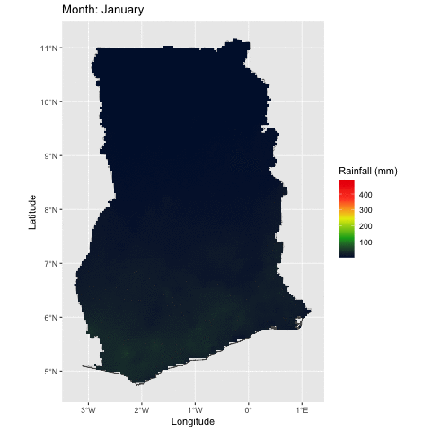

library(raster) #For raster preprocessing
library(sf) #For loading the Ghana shapefile
library(ncdf4) #For opening rainfall files
library(tidyverse) #For any necessary data transformations and plotting
library(exactextractr) #For extracting pixel values
library(parallel) #For parallel computing
library(foreach) #For parallel computing
library(doParallel) #For parallel computing
library(tictoc) #For parallel computing
library(gganimate) #For creating gifsNote: This is a project that created back in April 2023, on my previous website. Additionally, the full code for this project is available in a Github repository here.
Part 1: Introduction
Something that I have wanted to do for a while now is a make an animation of monthly rainfall patterns in Ghana using satellite data. However, I had been hesitant to start, worried that netCDF files and gganimate would be complex and time extensive. Fortunately, both netCDF files and gganimate were pretty easy to use.
Part 1A: Datasets
There were two datasets used in this project:
- Monthly Rainfall Data from TAMSAT, from January 1983 to December 2022
- Shapefile of Ghana, used for cropping and masking the rainfall data
The monthly rainfall data from TAMSAT was downloaded as a .nc file from the IRI Climate Library. This includes all available months from January 1983 to December 2022.
Part 1B: Packages
Below are a list of the packages I used for this project, and a brief explanation of the purpose of each package
Part 1C: Functions
I created two functions for this project to speed up some of the steps. The first function is called CropRaster, which streamlines the process of cropping raster data to the boundaries of a shapefile. It uses the crop and the mask functions from the raster package. The code for this function is below:
CropRaster <- function(raster, boundary) {
raster.crop <- crop(raster, extent(boundary))
raster.mask <- mask(raster.crop, boundary)
return(raster.mask)
}The second function is RasterToDataframe, which streamlines the process of transforming a raster dataset into a dataframe. It uses the rasterToPoint function from the raster package to transform a raster in point data, and then uses the as.data.frame function to transform the point data into a dataframe. The resulting product is a dataframe with three variables: X Coordinate, Y Coordinate, and Value. The code for this function is below:
RasterToDataframe <- function(raster) {
raster.pts <- rasterToPoints(raster)
raster.df <- as.data.frame(raster.pts)
return(raster.df)
}Part 2: Image Processing
To ensure that the satellite rainfall was ready for animation, there were few preprocessing steps that occurred.
Part 2a: Converting NetCDF files into Rasters
There are two steps for converting the NetCDF files into rasters. The first to extract the variables from the netCDF/nc files.
lon <- ncvar_get(TAMSATMonth.nc, "X")
lat <- ncvar_get(TAMSATMonth.nc, "Y")
rainfall <- ncvar_get(TAMSATMonth.nc, "rfe")There are three variables that we need to extract from the “TAMSATMonth.nc” file. We need to extract the location of what will become the pixels in the raster dataset, from the variables “X” and “Y”, which are longitude and latitude, respectively. We also need to extract the pixel value (a.k.a the rainfall amounts) for each month from the “rfe” (rain fall estimate) variable.
for(i in 1:480){
TAMSATMonth.raster[[i]] <- raster(rainfall[, , i], xmn=min(lat),
x = xmx=max(lat),
ymn=min(lon), ymx=max(lon),
crs=CRS("+proj=longlat +ellps=WGS84 +datum=WGS84 +no_defs+ towgs84=0,0,0"))
TAMSATMonth.raster[[i]] <- t(TAMSATMonth.raster[[i]])
TAMSATMonth.raster[[i]] <- flip(TAMSATMonth.raster[[i]], 2)
}The next step is to transform the extracted variables into RasterLayers using the raster function from the raster package. In some ways, the “rainfall” object is already a raster, each entry represents the rainfall amount for a location, with rows serving as the x-coordinate and the columns representing the y-coordinates (for example rainfall[1, 1, 1], will give you the rainfall amount in the northwestern most pixel for January 1983). However, the rainfall object has no associated geographic reference with it, so we must use the “lon” and “lat” objects to define the extent of the raster data. We must also assign a coordinate reference system (crs) to the rasters as well, which is WGS 84. The last step is to transpose and flip the coordinates of raster, so that the pixels are in the correct location.
Part 2b: Creating mean monthly rainfall rasters
For this part, we need to calculate the mean rainfall for each month. This step was a bit tricky. Our new raster, TAMSATMonth.raster, is a list of 480 rasters. In order to calculate the mean rainfall for each month, I had to add each raster to the mean function (typing out the name of the raster 40 times for each month). I’m not going to include the code here because it is kind of messy.
Part 3: Creating the Animated Time Series
The final step in this project was to create the animation using gganimate. To do so however, requires transforming the raster data into a dataframe using the RasterToDataFrame function from above.
Once a dataframe for each month has been created, a new column called “Month” is created for every dataframe, with the value of the dataframe corresponding to the month that is represented by the dataframe. Next, the rbind function is used to combine the 12 dataframes together into one. The last step was to use the factor function to order the observations by month, so that the months are displayed in the correct order in the animation.
Part 3A: gganimate
Now that all of the data preprocessing is done, we can make an animation of rainfall in Ghana. Below is the code used to make the animation:
p <- ggplot() +
geom_sf(data = Ghana) +
geom_raster(data = MonthlyMean, aes(x = x, y = y, fill = layer)) +
scale_fill_gradientn(colours=c("#001137", "#0aab1e", "#e7eb05", "#ff4a2d", "#e90000"),
name="Rainfall (mm)") +
labs(title = 'Month: {closest_state}', x = "Longitude", y = "Latitude") +
transition_states(Month, transition_length = 1, state_length = 2)The code for the animation looks very similar to normal ggplot until you get to the fifth argument (line 6), the argument “title” has {closest_state}. I’ll get to this in a moment, it will make more sense to explain what is going on in line 7 first.
In line 7, there is a function called transition_states, that determines the parameters of the animation. There are three required arguments:
states: This is the column to be animated. “states” refers to the categories displayed in the column, which in this case in months. The states argument is similar to the facet_wrap or color arguements in ggplot.
transition_length: Refers to the length of the transition in the animation. This is a relative amount, based on the number of states in the dataset.
state_length: Refers to the length of the states in the animation. This is a relative amount, based on the number of stats in the dataset.
The transition_length and state_length arguments can be a bit obscure; my recommendation is that you plug and play the numbers you into the arguments, but make sure that the transition_length argument is less than the state_length argument.Back to line 6 quickly - in the argument “title”, {closest_state} will show the name of the month that is closest to the current frame.
To actually display the animation, we need to save our ggplot as an object (“p”), and then use the animate function to display the animation.
animate(p)The animate function might take a minute to load, but once it is done, the animation will be displayed in your viewer. When the animation is to your liking, you can use the save_animation function to save your animation as a gif, with the first argument being the name you wish to give the file, and the second argument being the animation you want to save.
save_animation("MeanRainfallTAMSAT.gif", animation = last_animation())Below is the final product:

The animation does a good job at showing the general seasonal rainfall trends in Ghana. The animation, however, is a bit a clunky when it hits July, but this is because there is a small dry season in southern Ghana in July and August.
Next Steps/Future Directions
If were to build upon this project in the future, below are a few things I would consider doing the following:
*Tweak the parameters of the animation frame length to create a smoother transition
*Change the temporal extent and resolution of the rainfall (ex. do daily rainfall for the month of May.)
*Try to visualize a single storm rather than long term rainfall patterns.
*Find a more efficient method to parse out the months in the list of rasters